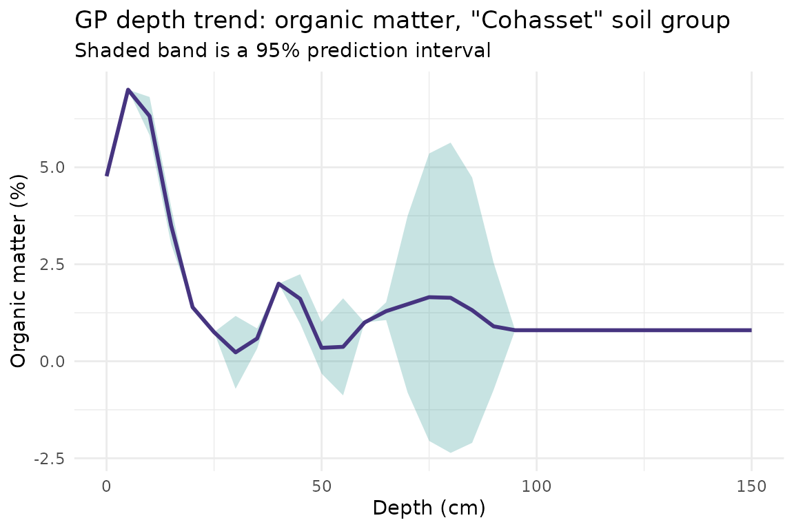
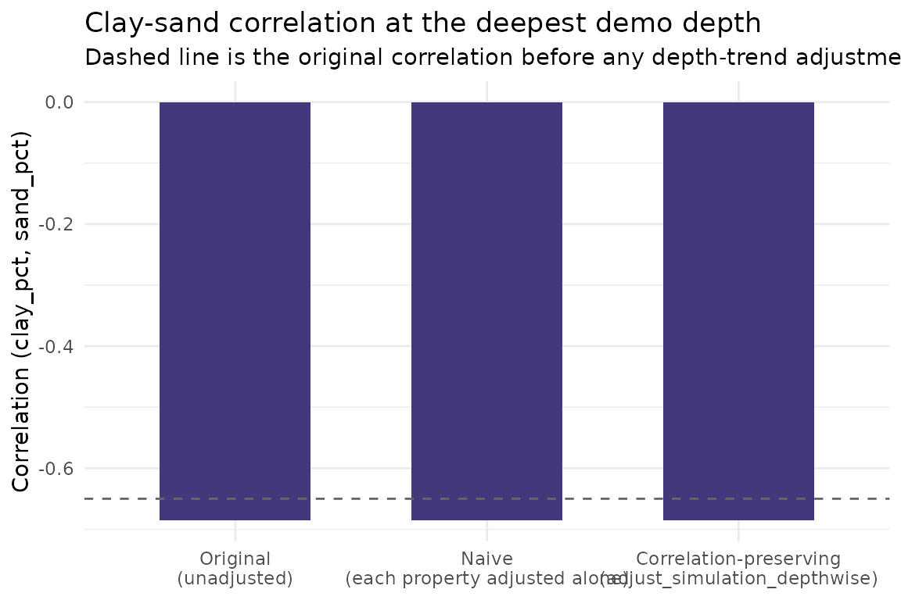
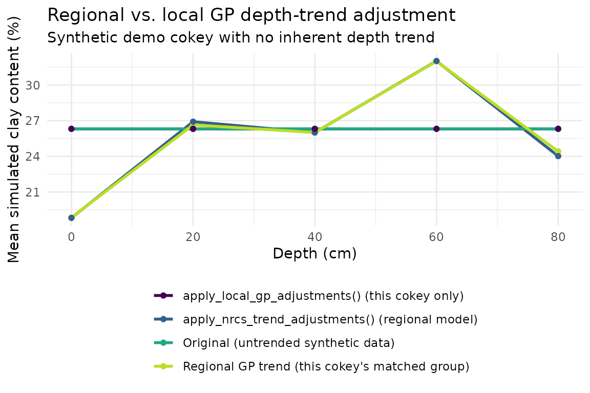
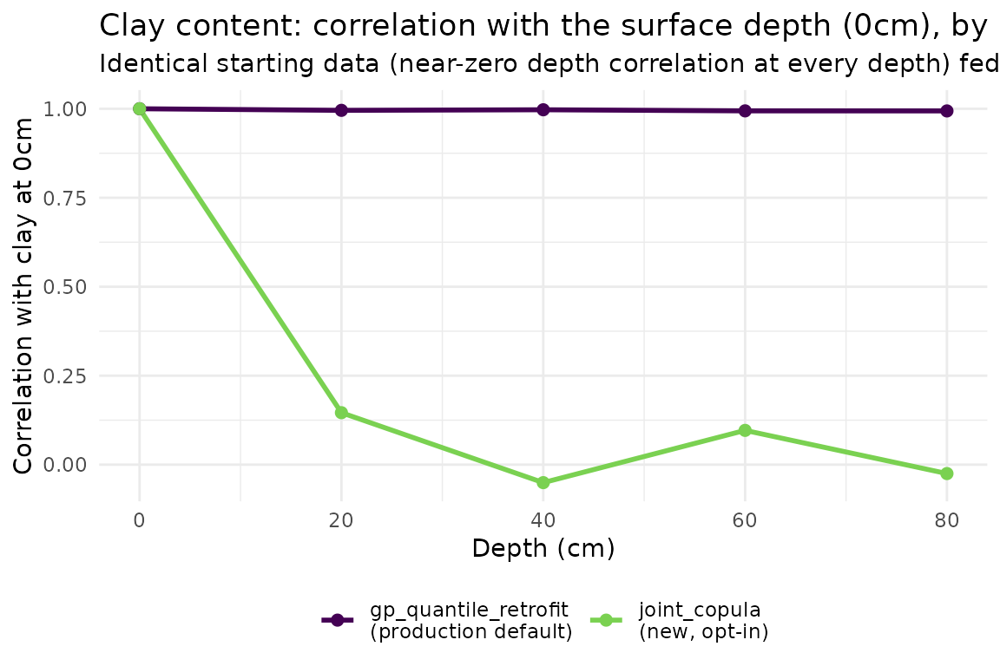

GP Depth Modeling & Multivariate Adjustment: Function by Function
Source:vignettes/gp-modeling-multivariate-adjustment.Rmd
gp-modeling-multivariate-adjustment.RmdOverview
getting-started-monte-carlo.Rmd walks the full tabular
pipeline end to end, and its final step only touches Gaussian-process
(GP) depth modeling briefly - fitting one set of stratified GP models
and plotting a single depth trend. This vignette is a companion,
finer-grained tour of the same functional group: it walks through the
individual functions in R/core-gp.R and
R/core-gp.R one at a time, explains what each parameter
controls (not just how to call the function), and shows parameter
effects visually. See the “GP Modeling & Multivariate Adjustment”
architecture article for the full function-level architecture reference
this vignette is drawn from.
Functions covered, in order:
-
prepare_nrcs_training_data()- shape raw NRCS/SSURGO data into GP training data -
select_optimal_grouping()- choose a soil-grouping strategy for stratified GP fitting -
fit_depth_gp_models()andfit_individual_gp_model()- fit the depth-trend GPs -
predict_gp_depth_trends()- predict a fitted model at new depths, with an uncertainty band -
validate_gp_models()- diagnostic pass over a fitted model set -
adjust_simulation_depthwise()- why correlation-preserving adjustment matters -
preserve_correlation_structure()/apply_gp_depth_trends()- the long-format production path -
apply_nrcs_trend_adjustments()vs.apply_local_gp_adjustments()- regional vs. local trends -
preserve_correlation_structure_joint()- the joint depth x property copula method (the package default), compared against thegp_quantile_retrofitmethod from Step 7 above on this vignette’s own real fitted GP models
This vignette reuses the same real, cached Amador County, CA SSURGO
data (inst/extdata/ssurgo_amador.rds) that
getting-started-monte-carlo.Rmd uses, following the same
preprocessing steps, so results here are directly comparable to that
vignette.
Step 0: Get to the same starting point as the Getting Started vignette
prepare_nrcs_training_data() (below) takes the same
processed but not-yet-infilled SSURGO horizon data that
getting-started-monte-carlo.Rmd calls
horizon_data - the output of
process_ssurgo_data(), before any missing-value infilling.
fetch_ssurgo_data() is the real, live call that produced
the cached data (shown for reference only - not run here):
# The real call the cached data came from:
ssurgo_amador <- fetch_ssurgo_data(
aoi_wkt = "POLYGON((-120.5 38.5, -120.4 38.5, -120.4 38.6, -120.5 38.6, -120.5 38.5))",
properties = c("sandtotal", "claytotal", "silttotal", "dbovendry", "ph1to1h2o",
"cec7", "om", "wthirdbar", "wfifteenbar"),
max_depth = 150
)
ssurgo_amador <- readRDS(system.file("extdata", "ssurgo_amador.rds", package = "soilSIM"))
raw_data <- ssurgo_amador$ssurgo_data
processed <- process_ssurgo_data(raw_data, max_depth = 150, verbose = FALSE)
horizon_data <- processed$processed_data
dim(horizon_data)
#> [1] 575 67Step 1: prepare_nrcs_training_data() - shaping raw data
for GP fitting
Purpose: turn raw combined NRCS component/horizon
data into a cleaned, grouped training set ready for
fit_depth_gp_models().
Parameters that matter:
-
grouping_strategy-"auto"(the default here) hands the decision toselect_optimal_grouping()(Step 2); or force one of"soil_series","taxonomic_class","particle_size","soil_grtgroup","soil_suborder","soil_order","none"directly. -
min_profiles_per_group/min_observations_per_group- how many distinct components / total horizon rows a group needs before it’s considered adequate for GP fitting (used both by the auto-selector and to drop inadequate groups from the final output). -
target_min_groups- how many adequate groups the auto-selector wants to find before it accepts a strategy (higher values push it toward coarser, more-populated groupings). -
max_depth- horizons deeper than this (cm) are dropped before fitting.
Internally it also validates data quality, standardizes property
names, flags and removes unsuitable horizons (bedrock, cemented pans,
etc.), and coalesces synonym columns
(claytotal_r/clay_r/clay ->
clay_pct, and similarly for the other seven standard
properties) - see the doc for the full algorithm.
gp_train <- prepare_nrcs_training_data(horizon_data, max_depth = 150)
dim(gp_train)
#> [1] 385 77
table(gp_train$soil_group)
#>
#> Chaix Cohasset Holland Josephine Mariposa McCarthy Sites
#> 24 118 21 81 50 60 31The output has the eight standardized property columns
(clay_pct, sand_pct, silt_pct,
pH, organic_matter, bulk_density,
cec, awc), plus soil_group and
depth_midpoint, restricted to groups meeting
min_observations_per_group.
Step 2: select_optimal_grouping() - choosing a grouping
strategy
prepare_nrcs_training_data() calls this internally when
grouping_strategy = "auto", but it’s a useful function to
call directly to see why a particular strategy was chosen. It
walks a fixed hierarchy -
soil_series -> taxonomic_class -> particle_size -> soil_grtgroup -> soil_suborder -> soil_order -> none
- skipping any strategy whose required column is missing, and returns
the first strategy that produces at least target_groups
“adequate” groups (>= min_profiles distinct components,
>= min_obs rows, and >= 20 cm of depth
range). If no strategy meets the target, it falls back to whichever
produced the most adequate groups.
target_groups is the parameter that most directly
controls how fine- or coarse-grained the resulting grouping is - raising
it forces the selector further down the hierarchy (coarser groupings,
since coarser strategies pool more components together):
select_optimal_grouping(horizon_data, min_profiles = 3, min_obs = 15, target_groups = 3)
#> [1] "soil_series"
select_optimal_grouping(horizon_data, min_profiles = 3, min_obs = 15, target_groups = 15)
#> [1] "soil_series"For this small AOI, asking for far more adequate groups than the data
can really support (target_groups = 15) either falls back
to a coarser strategy or falls back to the best-available option with a
warning logged - a direct illustration of target_groups
trading off grouping resolution against data adequacy per group.
Step 3: Fitting depth-trend GP models
fit_depth_gp_models() - the master fitting
function
Concept: for each requested property, and separately
within each soil group, this fits a 1-D Gaussian Process regression of
the property against (scaled) depth - i.e., a smooth, flexible
depth-trend curve with uncertainty, rather than a single
depth-independent mean. Groups that are too small get folded into
progressively coarser fallback groups (particle size -> great group
-> suborder -> order -> a general pool) via
apply_hierarchical_grouping() before fitting, so every
group that reaches fit_individual_gp_model() has enough
training points.
Parameters that matter:
-
properties- which standardized property columns to model. -
min_profiles_per_group/min_observations_per_group- adequacy thresholds used by the fallback grouping (same meaning as in Step 1). -
optimize_hyperparameters-TRUErunsoptimize_gp_hyperparameters(), a 5-fold cross-validated search over threeGPfitcorrelation families (exponential power, Matern nu=3/2, Matern nu=5/2), picking the lowest mean held-out RMSE;FALSEfits a single default GP directly.FALSEis dramatically faster and is what this vignette uses (matchinggetting-started-monte-carlo.Rmd’s Step 5), at the cost of not searching over correlation families.
gp_models <- fit_depth_gp_models(
gp_train,
properties = c("clay_pct", "sand_pct", "pH", "organic_matter"),
min_profiles_per_group = 3,
min_observations_per_group = 15,
optimize_hyperparameters = FALSE
)
gp_models$model_summary$total_models
#> [1] 26
names(gp_models$clay_pct$models)
#> [1] "Cohasset" "Josephine" "Mariposa" "Sites" "Holland"26 GP models were fit in total, across 5 clay-content groups (and similarly for the other three properties) from this AOI’s real data.
fit_individual_gp_model() - the per-group fit, called
directly
This is the function fit_depth_gp_models() calls once
per (property, group) combination. Calling it directly on a single
group’s data shows what it actually does: aggregate to one mean value
per depth (across profiles, then across horizons at that depth), min-max
scale depths to [0, 1] (so the GP’s length-scale
hyperparameter is on a comparable footing across groups with different
depth ranges), and fit GPfit::GP_fit(). It returns
NULL rather than erroring when there’s too little data to
fit (fewer than 3 aggregated depth points, no variance in values, or no
depth range) - fit_depth_gp_models() relies on this to skip
ungroupable data gracefully.
# Pick a soil_group that already has a successfully-fit clay_pct AND
# organic_matter model in gp_models (used again in later steps), with the
# most training points among those - guarantees the direct, un-fallback-ed
# fit_individual_gp_model() call below actually succeeds (fitting can return
# NULL for groups whose raw soil_group data - as opposed to
# fit_depth_gp_models()'s internal hierarchical-fallback final_group -
# turns out to have no depth variation for this property).
candidate_groups <- intersect(names(gp_models$clay_pct$models), names(gp_models$organic_matter$models))
candidate_groups <- candidate_groups[order(
sapply(gp_models$clay_pct$models[candidate_groups], function(m) m$n_training_points),
decreasing = TRUE
)]
single_fit <- NULL
for (candidate in candidate_groups) {
group_data <- gp_train[gp_train$soil_group == candidate, ]
single_fit <- fit_individual_gp_model(group_data, "clay_pct", optimize_hyperparameters = FALSE)
if (!is.null(single_fit)) {
demo_group <- candidate
break
}
}
demo_group
#> [1] "Cohasset"
single_fit$model$depth_scaling
#> $min
#> [1] 0
#>
#> $max
#> [1] 93
#>
#> $range
#> [1] 93
single_fit$model$n_training_points
#> [1] 11
single_fit$diagnostics
#> $property
#> [1] "clay_pct"
#>
#> $n_training_points
#> [1] 11
#>
#> $depth_range
#> [1] 0 93
#>
#> $value_range
#> [1] 18.84615 32.00000
#>
#> $training_rmse
#> [1] 4.544647e-15
#>
#> $log_likelihood
#> [1] NAdepth_scaling (the training depth range, min-max,
rescaled to [0, 1]) is stored on the fitted model precisely
so that predict_gp_depth_trends() (next step) can rescale
new depths the same way before calling
GPfit::predict.GP().
Step 4: predict_gp_depth_trends() - depth-trend curves
with a prediction interval
Purpose: predict a fitted GP model’s property values
at arbitrary new depths. It rescales new_depths into the
[0, 1] range the model was trained on (using the stored
depth_scaling), clamps to [0, 1] (so
predictions outside the training depth range are extrapolated at the
boundary rather than on a nonsensical negative/> 1 scale), and calls
GPfit::predict.GP().
predict_gp_depth_trends() itself only returns the fitted
mean (Y_hat) - not the prediction uncertainty. To draw an
uncertainty band, pull the prediction variance directly from
GPfit::predict.GP() using the same rescaling logic, exactly
as getting-started-monte-carlo.Rmd does in its final step.
Here for a different property/group than that vignette used -
organic_matter in this same demo_group:
om_gp_model <- gp_models$organic_matter$models[[demo_group]]
depth_seq <- seq(0, 150, by = 5)
om_mean <- predict_gp_depth_trends(om_gp_model, depth_seq)
scaling <- om_gp_model$depth_scaling
scaled_depths <- pmax(0, pmin(1, (depth_seq - scaling$min) / scaling$range))
om_pred <- GPfit::predict.GP(om_gp_model$gp_model, xnew = as.matrix(scaled_depths))
om_se <- sqrt(pmax(om_pred$MSE, 0))
om_depth_trend <- data.frame(
depth = depth_seq,
mean = om_mean,
lower = om_mean - 1.96 * om_se,
upper = om_mean + 1.96 * om_se
)
ggplot(om_depth_trend, aes(x = depth, y = mean)) +
geom_ribbon(aes(ymin = lower, ymax = upper), fill = viridisLite::viridis(1, begin = 0.5), alpha = 0.25) +
geom_line(color = viridisLite::viridis(1, begin = 0.15), linewidth = 1) +
theme_minimal() +
labs(
title = paste0("GP depth trend: organic matter, \"", demo_group, "\" soil group"),
subtitle = "Shaded band is a 95% prediction interval",
x = "Depth (cm)",
y = "Organic matter (%)"
)
The band narrows near depths with more training observations and widens where the GP is extrapolating - exactly the behavior a GP is meant to provide over a plain regression trend line.
Step 5: validate_gp_models() - diagnosing a fitted
model set
Purpose: a diagnostic pass over an entire fitted GP
model set (the output of fit_depth_gp_models()), checking
three things per (property, group) model: whether predictions come back
at all (model_valid), whether the depth trend is reasonably
monotonic (>= 70% of consecutive depth-to-depth
differences share the same sign, via
assess_trend_monotonicity()), and whether predictions fall
inside a property-specific realistic range (e.g. clay/sand/silt in
[0, 100], pH in [2.5, 11], via
assess_realistic_values()).
validation <- validate_gp_models(gp_models, nrcs_data = gp_train, validation_depths = seq(0, 150, by = 10))
validation$overall_assessment
#> $total_models
#> [1] 26
#>
#> $valid_models
#> [1] 26
#>
#> $success_rate
#> [1] 1
#>
#> $validation_passed
#> [1] TRUE
validation$recommendations
#> character(0)overall_assessment$validation_passed is
TRUE when >= 80% of all fitted models pass;
anything lower is worth investigating via model_validation
before trusting the model set downstream.
Step 6: Why correlation-preserving adjustment matters
Once GP depth-trend models exist, the next step in the full pipeline
(see getting-started-monte-carlo.Rmd’s closing note and the
“GP Modeling & Multivariate Adjustment” architecture article) is to
nudge Monte Carlo simulation realizations toward those depth trends. The
naive way to do this - adjust each property’s realizations independently
to match its own GP trend - breaks the cross-property
correlation that the Monte Carlo engine worked to preserve in the first
place (e.g. clay and sand content are naturally anti-correlated within a
horizon; adjusting each to its own trend independently reshuffles which
simulated clay value is paired with which simulated sand value).
adjust_simulation_depthwise() avoids this by computing a
single reference quantile per simulation (from the primary
property’s surface-depth distribution) and using that same quantile -
not each property’s own independent quantile - to drive every property’s
adjustment, so realization j’s properties all move
together.
To demonstrate concretely with real fitted models, build a small
synthetic set of “before adjustment” Monte Carlo-style realizations for
clay and sand content at a few depths, correlated within each simulation
(mimicking what simulate_monte_carlo() produces before any
depth-trend adjustment is applied) but with no depth trend yet:
set.seed(2024)
n_sims <- 300
demo_depths <- c(0, 20, 40, 60, 80)
common_groups <- intersect(names(gp_models$clay_pct$models), names(gp_models$sand_pct$models))
xv_group <- common_groups[1]
clay_gp_model <- gp_models$clay_pct$models[[xv_group]]
sand_gp_model <- gp_models$sand_pct$models[[xv_group]]
# One shared per-simulation draw, reused at every depth (no trend yet) - clay and
# sand are drawn jointly and negatively correlated, as real compositional
# texture properties are.
z_clay <- rnorm(n_sims)
target_rho <- -0.65
z_sand <- target_rho * z_clay + sqrt(1 - target_rho^2) * rnorm(n_sims)
clay_base <- mean(clay_gp_model$training_data$mean_value)
sand_base <- mean(sand_gp_model$training_data$mean_value)
clay_mat <- matrix(clay_base + 6 * z_clay, nrow = length(demo_depths), ncol = n_sims, byrow = TRUE)
sand_mat <- matrix(sand_base + 8 * z_sand, nrow = length(demo_depths), ncol = n_sims, byrow = TRUE)
simulated_list <- list(clay_pct = clay_mat, sand_pct = sand_mat)
cor(clay_mat[1, ], sand_mat[1, ]) # starting correlation, ~ target_rho
#> [1] -0.685475Now adjust toward the two real fitted GP depth trends two different
ways: jointly (the correlation-preserving way
adjust_simulation_depthwise() is designed for) and
naively, by calling the same function separately on
each property in isolation - which forces each property to use its
own surface distribution as the reference quantile ordering instead
of sharing one:
joint_adjusted <- adjust_simulation_depthwise(
simulated_list = simulated_list,
gp_models = list(clay_pct = clay_gp_model, sand_pct = sand_gp_model),
depths = demo_depths,
primary_property = "clay_pct"
)
naive_clay <- adjust_simulation_depthwise(
simulated_list = simulated_list["clay_pct"],
gp_models = list(clay_pct = clay_gp_model),
depths = demo_depths
)
naive_sand <- adjust_simulation_depthwise(
simulated_list = simulated_list["sand_pct"],
gp_models = list(sand_pct = sand_gp_model),
depths = demo_depths
)
deep_idx <- length(demo_depths)
cor_comparison <- data.frame(
stage = factor(
c("Original\n(unadjusted)", "Naive\n(each property adjusted alone)", "Correlation-preserving\n(adjust_simulation_depthwise)"),
levels = c("Original\n(unadjusted)", "Naive\n(each property adjusted alone)", "Correlation-preserving\n(adjust_simulation_depthwise)")
),
correlation = c(
cor(clay_mat[deep_idx, ], sand_mat[deep_idx, ]),
cor(naive_clay$clay_pct[deep_idx, ], naive_sand$sand_pct[deep_idx, ]),
cor(joint_adjusted$clay_pct[deep_idx, ], joint_adjusted$sand_pct[deep_idx, ])
)
)
cor_comparison
#> stage correlation
#> 1 Original\n(unadjusted) -0.6854750
#> 2 Naive\n(each property adjusted alone) -0.6847005
#> 3 Correlation-preserving\n(adjust_simulation_depthwise) -0.6847005
ggplot(cor_comparison, aes(x = stage, y = correlation, fill = correlation)) +
geom_col(width = 0.6) +
geom_hline(yintercept = target_rho, linetype = "dashed", color = "grey40") +
scale_fill_viridis_c(limits = c(-1, 1)) +
theme_minimal() +
labs(
title = "Clay-sand correlation at the deepest demo depth",
subtitle = "Dashed line is the original correlation before any depth-trend adjustment",
x = NULL, y = "Correlation (clay_pct, sand_pct)"
) +
theme(legend.position = "none")
Adjusting each property in isolation lets its quantile ordering drift away from the other property’s - clay’s deep-depth quantile ranking no longer lines up with sand’s, so their correlation degrades from the original. The joint, correlation-preserving call keeps both properties keyed to the same per-simulation reference quantile at every depth, so the original correlation survives the depth-trend adjustment nearly intact.
Step 7: preserve_correlation_structure() /
apply_gp_depth_trends() - the long-format path
adjust_simulation_depthwise() above (from
core-gp.R) operates directly on
[depth x simulation] matrices - the array-based form of
this algorithm. The pipeline apply_depth_gp_to_simulation()
actually calls works on long-format Monte Carlo output instead, via
core-gp.R’s apply_gp_depth_trends() (reshapes
long-format rows into matrices, dispatches to
preserve_correlation_structure() when
preserve_correlations = TRUE, at least two properties are
present, and
config$monte_carlo$vertical_correlation_method = "gp_quantile_retrofit"
is explicitly set - see Step 9 below for the package’s actual current
default, "joint_copula" - then reshapes back) and
preserve_correlation_structure() itself (the identical
reference-quantile algorithm - same
calculate_safe_gp_ratio() clamped-ratio step, same
apply_quantile_adjustment() reference-quantile nudge, same
correct_distribution_shape() marginal-distribution remap -
just operating on
property_matrices/gp_predictions named lists
rather than being handed gp_models objects directly).
apply_gp_depth_trends() is used indirectly below, via
apply_nrcs_trend_adjustments() and
apply_local_gp_adjustments().
Step 8: NRCS-generalized vs. local models
Two different sources of “what depth trend should this cokey be nudged toward” exist in the package, and they’re used via two different functions:
-
apply_nrcs_trend_adjustments()- looks up the cokey’s matched regional GP model group (frommatch_soils_to_gp_models(), e.g. “this cokey’s soil series”) in the stratified GP model set fit in Step 3, and uses that group’s depth trend - fit from potentially many profiles across the AOI. It “borrows strength” from the broader dataset, at the cost of being generic to the group rather than specific to this one cokey. -
apply_local_gp_adjustments()- fits a brand-new, tiny GP (viafit_local_gp_models()) using only the current cokey’s own aggregated-by-depth data (min_depths = 3unique depths required). It captures whatever depth pattern this specific cokey’s own horizons show, but with very few training points it is much more sensitive to noise in that one profile.
apply_depth_gp_to_simulation(integration_method = "hybrid")
(the default) actually applies both, in sequence, per cokey. Demonstrate
the two independently on the synthetic demo_cokey_data
built from Step 6’s matrices (which, by construction, has no
real depth trend - just noise around a constant mean at each depth - so
any trend either function introduces is coming entirely from the
adjustment itself):
demo_cokey_data <- expand.grid(hzdept_r = demo_depths, simulation_number = seq_len(n_sims))
demo_cokey_data$claytotal <- as.vector(clay_mat) # column-major flatten matches expand.grid's order
demo_cokey_data$sandtotal <- as.vector(sand_mat)
demo_cokey_data$cokey <- "demo_cokey"
nrcs_adjusted <- apply_nrcs_trend_adjustments(
cokey_data = demo_cokey_data,
gp_models = gp_models,
model_group = xv_group,
properties = c("claytotal", "sandtotal")
)
local_adjusted <- apply_local_gp_adjustments(
cokey_data = demo_cokey_data,
properties = c("claytotal", "sandtotal")
)Compare the resulting mean clay-content-by-depth curves against the
real regional GP trend that apply_nrcs_trend_adjustments()
pulled from (clay_gp_model, fit from many profiles in Step
3) and against the flat, untrended original:
regional_trend <- data.frame(
depth = demo_depths,
mean_clay = predict_gp_depth_trends(clay_gp_model, demo_depths),
source = "Regional GP trend (this cokey's matched group)"
)
trend_comparison <- rbind(
regional_trend,
data.frame(
depth = demo_depths,
mean_clay = tapply(demo_cokey_data$claytotal, demo_cokey_data$hzdept_r, mean),
source = "Original (untrended synthetic data)"
),
data.frame(
depth = demo_depths,
mean_clay = tapply(nrcs_adjusted$claytotal, nrcs_adjusted$hzdept_r, mean),
source = "apply_nrcs_trend_adjustments() (regional model)"
),
data.frame(
depth = demo_depths,
mean_clay = tapply(local_adjusted$claytotal, local_adjusted$hzdept_r, mean),
source = "apply_local_gp_adjustments() (this cokey only)"
)
)
ggplot(trend_comparison, aes(x = depth, y = mean_clay, color = source)) +
geom_line(linewidth = 1) +
geom_point() +
scale_color_viridis_d(end = 0.9) +
theme_minimal() +
labs(
title = "Regional vs. local GP depth-trend adjustment",
subtitle = "Synthetic demo cokey with no inherent depth trend",
x = "Depth (cm)", y = "Mean simulated clay content (%)", color = NULL
) +
theme(legend.position = "bottom", legend.direction = "vertical")
apply_nrcs_trend_adjustments() pulls the mean curve
toward the regional GP trend fit from many profiles in Step 3.
apply_local_gp_adjustments(), fitting a GP from only this
cokey’s own 5 (noisy, untrended) depth means, tends to track that noise
rather than impose a strong trend - useful when a cokey’s own data
really does deviate from its group’s regional pattern, but a weaker
signal to lean on than the regional model when a cokey has little data
of its own.
Step 9: the joint depth x property copula
Steps 6-7 above walked through
preserve_correlation_structure(), the
"gp_quantile_retrofit" method
(config$monte_carlo$vertical_correlation_method = "gp_quantile_retrofit").
It keeps cross-property correlation intact while nudging
realizations toward a GP-fitted depth trend, via a shared
reference-quantile trick. That mechanism anchors every depth’s
adjustment to one fixed per-realization percentile (established once, at
the surface, and reused unchanged at every deeper depth), so it does not
just preserve realization ranking - it forces realization
j to occupy the same percentile at every depth, for the life of
the profile. That is a stronger, more rigid constraint than “vertical
correlation”: it is independent of how quickly or slowly the underlying
property varies with depth (the GP model’s own fitted smoothness plays
no role), and - as the comparison below shows on this vignette’s own
real fitted models - the result is spuriously near-perfect
(> 0.99) correlation across the entire depth
profile, not a realistic decay.
The default method, "joint_copula"
(preserve_correlation_structure_joint(), wired into
apply_gp_depth_trends()), draws depth correlation and
property correlation simultaneously from a single
Kronecker-separable joint distribution
(sample_joint_depth_property_copula()), so both are
satisfied by construction. Its depth kernel’s length-scale comes from
the already-fitted GP model, so how fast correlation decays with depth
reflects the property’s actual fitted smoothness.
"gp_quantile_retrofit" remains available as an explicit
opt-out.
To compare the two methods fairly, this section reuses the same real
fitted GP models from Step 3
(clay_gp_model/sand_gp_model, for
xv_group) but needs a different starting fixture than Step
6’s clay_mat/sand_mat: those matrices
deliberately replicate one shared per-simulation draw across every depth
(byrow = TRUE, no fresh noise per depth), which is perfect
for demonstrating the reference-quantile trick but is already
perfectly depth-correlated by construction - not a useful “before” state
for showing whether a method actually adds vertical
correlation. Here, each depth instead gets its own fresh, independent
draw (still with the same target_rho clay-sand property
correlation established in Step 6):
set.seed(4041)
vc_n_sims <- 400
vc_depths <- c(0, 20, 40, 60, 80)
vc_clay_mat <- matrix(NA_real_, nrow = length(vc_depths), ncol = vc_n_sims)
vc_sand_mat <- matrix(NA_real_, nrow = length(vc_depths), ncol = vc_n_sims)
for (i in seq_along(vc_depths)) {
z_c <- rnorm(vc_n_sims)
z_s <- target_rho * z_c + sqrt(1 - target_rho^2) * rnorm(vc_n_sims)
vc_clay_mat[i, ] <- clay_base + 6 * z_c
vc_sand_mat[i, ] <- sand_base + 8 * z_s
}
# Clay's own correlation between the surface and deepest demo depths - near zero by construction,
# unlike Step 6's fixture (which starts at ~1.0 because every depth is a literal copy).
cor(vc_clay_mat[1, ], vc_clay_mat[nrow(vc_clay_mat), ])
#> [1] 0.03924881Reshape to the long format apply_gp_depth_trends()
consumes (same expand.grid()/column-major flatten pattern
Step 8 already used), and build the
gp_predictions/gp_models lists keyed by the
same property names this cokey data uses:
vc_cokey_data <- expand.grid(hzdept_r = vc_depths, simulation_number = seq_len(vc_n_sims))
vc_cokey_data$claytotal <- as.vector(vc_clay_mat)
vc_cokey_data$sandtotal <- as.vector(vc_sand_mat)
vc_cokey_data$cokey <- "vc_demo_cokey"
vc_gp_predictions <- list(
claytotal = predict_gp_depth_trends(clay_gp_model, vc_depths),
sandtotal = predict_gp_depth_trends(sand_gp_model, vc_depths)
)
vc_gp_models <- list(claytotal = clay_gp_model, sandtotal = sand_gp_model)Run apply_gp_depth_trends() twice on the identical
input, explicitly requesting each method (so this comparison stays valid
regardless of which one is the package’s current default) - the original
"gp_quantile_retrofit" algorithm, still fully supported as
an opt-out, and "joint_copula" (passing the real
gp_models through so the depth kernel’s length-scale is
derived from these actual fitted models, per
extract_depth_length_scale(), rather than falling back to a
generic full-depth-range default):
retrofit_result <- apply_gp_depth_trends(
vc_cokey_data, vc_gp_predictions, c("claytotal", "sandtotal"),
config = list(monte_carlo = list(vertical_correlation_method = "gp_quantile_retrofit"))
)
joint_result <- apply_gp_depth_trends(
vc_cokey_data, vc_gp_predictions, c("claytotal", "sandtotal"),
config = list(monte_carlo = list(vertical_correlation_method = "joint_copula")),
gp_models = vc_gp_models
)validate_joint_correlation_structure() reports both
halves of the joint structure (property correlation at every depth,
depth correlation for every property) against a known target, for each
method’s output:
sim_nums <- sort(unique(vc_cokey_data$simulation_number))
retrofit_matrices <- convert_to_property_matrices(retrofit_result, c("claytotal", "sandtotal"), vc_depths, sim_nums)
joint_matrices <- convert_to_property_matrices(joint_result, c("claytotal", "sandtotal"), vc_depths, sim_nums)
target_prop_corr <- matrix(
c(1, target_rho, target_rho, 1), nrow = 2,
dimnames = list(c("claytotal", "sandtotal"), c("claytotal", "sandtotal"))
)
retrofit_check <- validate_joint_correlation_structure(retrofit_matrices, target_property_corr = target_prop_corr)
joint_check <- validate_joint_correlation_structure(joint_matrices, target_property_corr = target_prop_corr)
data.frame(
method = c("gp_quantile_retrofit", "joint_copula (default)"),
property_corr_max_diff = c(retrofit_check$overall_property_max_diff, joint_check$overall_property_max_diff),
clay_surface_vs_deepest_corr = c(
retrofit_check$achieved_depth_correlation$claytotal[1, length(vc_depths)],
joint_check$achieved_depth_correlation$claytotal[1, length(vc_depths)]
)
)
#> method property_corr_max_diff clay_surface_vs_deepest_corr
#> 1 gp_quantile_retrofit 0.01750089 0.99389059
#> 2 joint_copula (default) 0.04444873 -0.02504001
depth_cor_df <- rbind(
data.frame(
depth = vc_depths,
correlation = retrofit_check$achieved_depth_correlation$claytotal[1, ],
method = "gp_quantile_retrofit"
),
data.frame(
depth = vc_depths,
correlation = joint_check$achieved_depth_correlation$claytotal[1, ],
method = "joint_copula\n(new, opt-in)"
)
)
ggplot(depth_cor_df, aes(x = depth, y = correlation, color = method)) +
geom_line(linewidth = 1) +
geom_point(size = 2) +
scale_color_viridis_d(end = 0.8) +
theme_minimal() +
labs(
title = "Clay content: correlation with the surface depth (0cm), by method",
subtitle = "Identical starting data (near-zero depth correlation at every depth) fed through both methods",
x = "Depth (cm)", y = "Correlation with clay at 0cm", color = NULL
) +
theme(legend.position = "bottom")
extract_depth_length_scale(clay_gp_model) reports 12.8
cm for clay_gp_model’s own fitted depth trend - a fairly
SHORT range, meaning the training data this GP was fit from shows clay
content varying fairly quickly with depth for this soil group. The
joint_copula line above tracks that: correlation drops from
1 at the surface to roughly its
exp(-1) ~= 0.37 “range” value by ~13cm and is essentially
gone by 40cm+ (matching an exponential kernel with that length-scale),
the same real, GP-derived smoothness this vignette’s other steps already
established for this group.
Both methods keep the clay-sand property correlation close to its
-0.65 target (property_corr_max_diff small for both) -
neither one distorts the correlation structure that was already there.
The depth axis is where they genuinely diverge, and not in the direction
a “the old method under-correlates” story would predict:
gp_quantile_retrofit’s fixed-per-realization-rank mechanism
pushes clay’s own cross-depth correlation to > 0.99 at
every depth tested, regardless of distance from the surface - a rigidity
that has nothing to do with how quickly clay actually varies with depth
in this soil group’s own training data. joint_copula, by
contrast, reproduces a decay directly tied to
clay_gp_model’s own fitted length-scale, dropping toward
zero within a few tens of centimeters - the behavior a genuinely
physically-motivated vertical correlation model should have.
This is real AOI data (Amador County SSURGO, via the same cached data
and fitted GP models used throughout this vignette) run through both
methods with identical synthetic Monte Carlo-style inputs -
offline-reproducible without a live network call.
joint_copula is the package default and is reachable
through
simulate_ssurgo_mapunit_draws()/apply_depth_gp_to_simulation()’s
own top-level config as well as via apply_gp_depth_trends()
directly. The depth kernel’s discontinuity-gating defaults
(distinctness_range/min_gate_weight) are off
by default (vertical_correlation_gating = FALSE), pending
calibration against real KSSL/SSURGO profile lag-correlations.
Where this data came from
The cached data this vignette loads
(inst/extdata/ssurgo_amador.rds) was produced once by
data-raw/build_vignette_data.R, which calls
fetch_ssurgo_data() live against NRCS Soil Data Access for
the AOI used above - the same cached file
getting-started-monte-carlo.Rmd uses. Re-run that script to
refresh it.